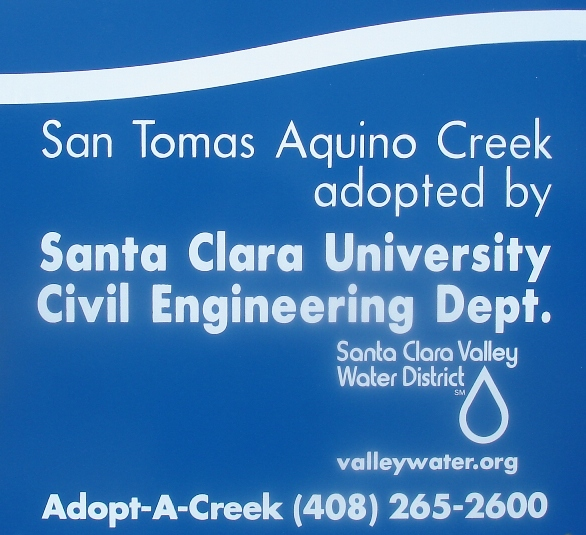

San Tomás Aquino Creek Cleanup

The Civil Engineering Department of Santa Clara University has adopted Reach 3 of the San Tomas Aquino Creek Trail in Santa Clara, as part of the Santa Clara Valley Water District's Adopt-a-Creek program (described at the cleanacreek website). As part of this, we coordinate a cleaning of the creek twice per year. These generally correspond to National River Cleanup Day or Coastal Cleanup Day as much as possible. Contact: creek-cleanup@scu.edu (please be patient for responses!)
Next Cleanup Date:
The next cleanup date will be Friday, May 14, 2021 - 1:30 p.m.. - 4:30 p.m., part of the National River Cleanup Day (taking place nationally in May). Participants in the creek cleanup must sign a waiver, which you can download here, sign in advance, and then bring with you. For 2021, please read the additional COVID-19 guidelines under the Safety tab.
News:
This creek has been highlighted on the CA State Water Resources Control Board's list of category 5 streams, meaning a segment where water quality standards are not met. The pollutant responsible for this designation is trash, both from illegal dumping and storm sewers draining into the creek.
The Creek Section We Clean
The reach we are responsible for, about a 1 mile long mile stretch from Monroe to Scott, is circled in red below. See site photos here.

Meeting Location:
You can park at the San Tomas Creek Trail Staging Area, at Monroe (where the "A" marker is located above). From that point it is a short walk up the trail to the meeting point. Bicycles can ride up the creek trail to the meeting spot. Bicycling directions are here. Those directions mostly work for driving too.
Basic Safety Information:
(this and more available from SCVWD):
- DO use caution around creek banks—they can be muddy and slippery.
- DO stay clear of homeless encampments.
- DO wear gloves at all times.
- DO be alert for stinging insects and snakes.
- DO stay in your group or work with a buddy.
- DO be cautious of poisonous plants like poison oak.
- DO lift with your legs, not with your back.
- DO handle sharp objects (glass) with care — children should NOT pick up broken glass.
- DO stop work before dusk.
- DO wear long pants and substantial leather shoes or boots with ankle support.
- DO NOT go in the water.
- DO NOT pick up heavy and/or awkward objects such as tires or large pieces of scrap metal — let us pick those items up for you.
- DO NOT pick up any objects which you suspect may be toxic or hazardous such as hypodermic needles, syringes, chemical drums, bloody clothing, chemicals, suspicious packages, and weapons. Notify the water district at 1-888-510-5151 of the location of toxic substances immediately.
- DO NOT pick up dead animals. Or play soccer with them.
- DO NOT run, throw objects or engage in horseplay.
- DO NOT overexert yourselves! Take breaks; drink plenty of water especially on warm, humid days.
- DO NOT stomp on bags. Injuries may occur from broken glass or sharp objects.